🏛️ 七大奇迹
7 Wonders · 设计：Antoine Bauza
游戏概述
《七大奇迹》是一款文明建设类卡牌游戏，带领你的文明穿越 3 个时代。每名玩家选择一个奇迹，并通过打出卡牌来发展文明。游戏结束时，分数最高的玩家获胜。
游戏配件
- 7 个奇迹板图
- 7 张奇迹卡
- 49 张一级卡（时代A）
- 49 张二级卡（时代B）
- 49 张三级卡（时代C）
- 84 张资源卡（7 种）
- 6 张军事卡
- 25 张计时卡
- 50 枚金币
- 40 枚负面标记（军事标记）
- 1 本规则书
游戏设置
- 将奇迹板图随机分发给每位玩家（也可以自选），每位玩家面前放着一块奇迹板图以及对应的奇迹卡。
- 每位玩家获得 3 枚金币。
- 将三个时代的卡牌分开，按时代将卡牌洗混。
- 根据玩家数量，从每个时代的牌堆中移除多余卡牌。
奇迹板图
每块奇迹板图分为时代A、时代B、时代C 等多个建造阶段，分别标注了每个阶段的费用与奖励。
版图布局示意：三块时代板图并排摆放。
游戏流程
每个时代进行若干轮。每轮所有玩家同时从手牌中选择 1 张卡，然后同时展示。
选择卡牌后，玩家可以执行以下 3 种行动之一：
- 打出卡牌（支付费用）；
- 建造奇迹（将卡牌面朝下放在奇迹板图下方）；
- 弃掉卡牌获得 3 枚金币。
回合结束：传牌
每位玩家将剩余手牌传给邻座玩家：时代A 和时代C 传给左边，时代B 传给右边。当每人只剩 1 张手牌时，最后一张手牌不打出，直接弃掉，时代结束。
卡牌费用与打出卡牌
卡牌费用
卡牌左上角的图标表示打出这张卡所需的费用。费用可以是资源（木材、矿石等），也可以是金币。
打出卡牌与卡牌颜色
打出卡牌时，先支付费用，然后将卡牌面朝上放在自己面前。卡牌的效果立即生效。
| 卡牌颜色 | 作用 |
|---|---|
| 棕色 | 提供资源 |
| 灰色 | 提供加工品 |
| 蓝色 | 提供分数 |
| 黄色 | 提供金币或交易优惠 |
| 红色 | 提供军事力量 |
| 紫色 | 公会，游戏结束时计分 |
| 绿色 | 提供科学符号 |
交易 / 奇迹建造 / 军事冲突
交易
玩家可以向相邻玩家购买资源。向邻居购买资源时，每购买 1 个资源需支付 2 枚金币；拥有相应黄色交易卡时，价格可以降为 1 枚金币。
奇迹建造
建造奇迹分为多个阶段。每个阶段需要支付对应的费用（将选中的卡牌面朝下放在奇迹板图下方作为建造标记）。完成阶段后获得对应奖励。
军事冲突
每个时代结束时，每位玩家与相邻玩家比较军事力量，力量较强的一方获得战争胜利标记，较弱的一方获得负面标记。
胜利标记的分值随时代递增：时代A 每个 +1 分、时代B 每个 +2 分、时代C 每个 +3 分；负面标记每个 -1 分。
科学计分与计分总表
科学计分
- 绿色卡牌上有 3 种科学符号（指南针、车轮、石板）。集齐 3 种不同符号可获得 7 分。
- 每种符号的数量按平方计分：1 个得 1 分，2 个得 4 分，3 个得 9 分……
- 部分紫色公会卡和奇迹阶段也可提供科学符号。
计分总表
| 分数来源 | 分数 |
|---|---|
| 军事 | 胜利标记按时代计分：时代A 每个 +1、时代B 每个 +2、时代C 每个 +3；失败标记每个 -1 |
| 国库 | 每 3 枚金币 1 分 |
| 蓝色卡 | 面版分数 |
| 黄色卡 | 特定条件分数 |
| 绿色科学 | 平方计分 |
| 紫色公会 | 特定条件分数 |
| 奇迹阶段 | 面版分数 |
| 负面标记 | 每个 -1 分 |
游戏结束与获胜
第三个时代结束后，游戏立即结束，所有玩家计算总分。总分最高的玩家获胜。平局时，金币多的玩家获胜；仍平局则共享胜利。
2 人游戏变体
2 人游戏时，使用一个虚拟玩家（自由城市）。自由城市按固定规则行动。
卡牌清单（时代一、二级卡示例）
一级卡（时代A）示例
| 卡牌名称 | 颜色 | 效果 |
|---|---|---|
| 木材厂 | 棕色 | 提供 1 木材 |
| 采石场 | 棕色 | 提供 1 石头 |
| 锯木坑 | 棕色 | 提供 1 木材 |
| 矿坑 | 棕色 | 提供 1 粘土 |
二级卡（时代B）示例
| 卡牌名称 | 颜色 | 效果 |
|---|---|---|
| 锯木场 | 棕色 | 提供 1 木材 |
| 采石场B | 棕色 | 提供 1 石头 |
| 制坯厂 | 棕色 | 提供 1 粘土 |
| 铸造厂 | 棕色 | 提供 1 矿石 |
卡牌清单（续）与奇迹一览
三级卡（时代C）示例
| 卡牌名称 | 颜色 | 效果 |
|---|---|---|
| 工会 | 紫色 | 按邻居蓝色卡数量计分 |
| 学者行会 | 紫色 | 按绿色科学符号计分 |
| 建造者行会 | 紫色 | 按奇迹阶段数量计分 |
奇迹一览
| 奇迹名称 | 阶段A效果 | 阶段B效果 | 阶段C效果 |
|---|---|---|---|
| 吉萨大金字塔 | 3 分 | 5 分 | 7 分 |
| 巴比伦空中花园 | 3 分 | 科学符号 | 7 分 |
| 亚历山大灯塔 | 3 分 | 交易优惠 | 7 分 |
| 阿尔忒弥斯神庙 | 3 分 | 5 分 | 7 分 |
| 摩索拉斯陵墓 | 3 分 | 卡牌回收入 | 5 分 |
| 罗德斯岛巨像 | 3 分 | 军事力量 | 7 分 |
| 奥林匹亚宙斯像 | 3 分 | 交易优惠 | 7 分 |
常见问题
问：打出卡牌时可以购买邻居的资源吗？
答：可以。打出卡牌时，可以通过向邻居购买资源来支付费用。
问：弃牌获得金币的行动一回合可以做多次吗？
答：不可以。每回合只能选择一种行动。
问：建造奇迹的阶段可以跳过吗？
答：可以，可以不按顺序建造，但必须支付对应阶段费用。
原版规则书图片（扫描版）
📖 展开查看原版规则书扫描图（11 页，点击放大）
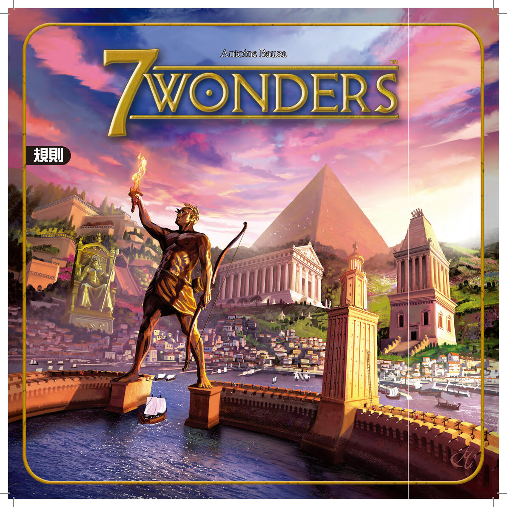
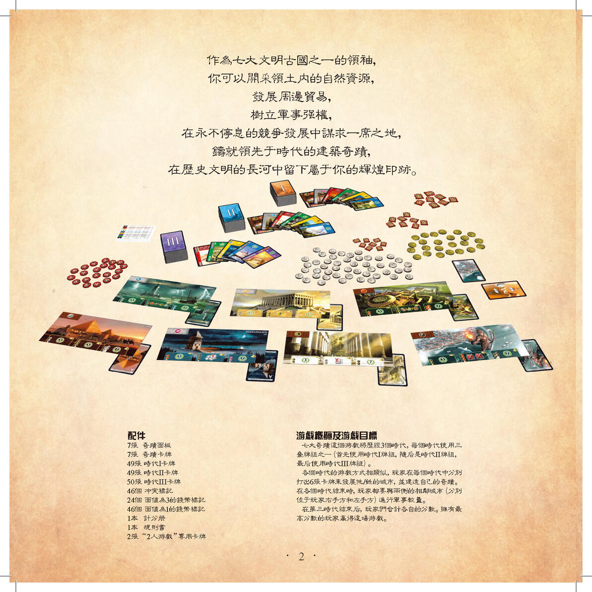
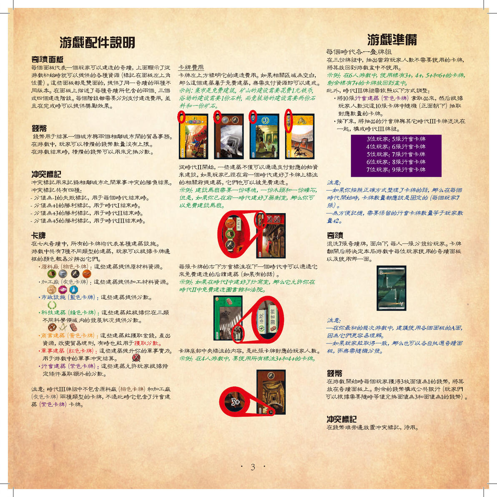
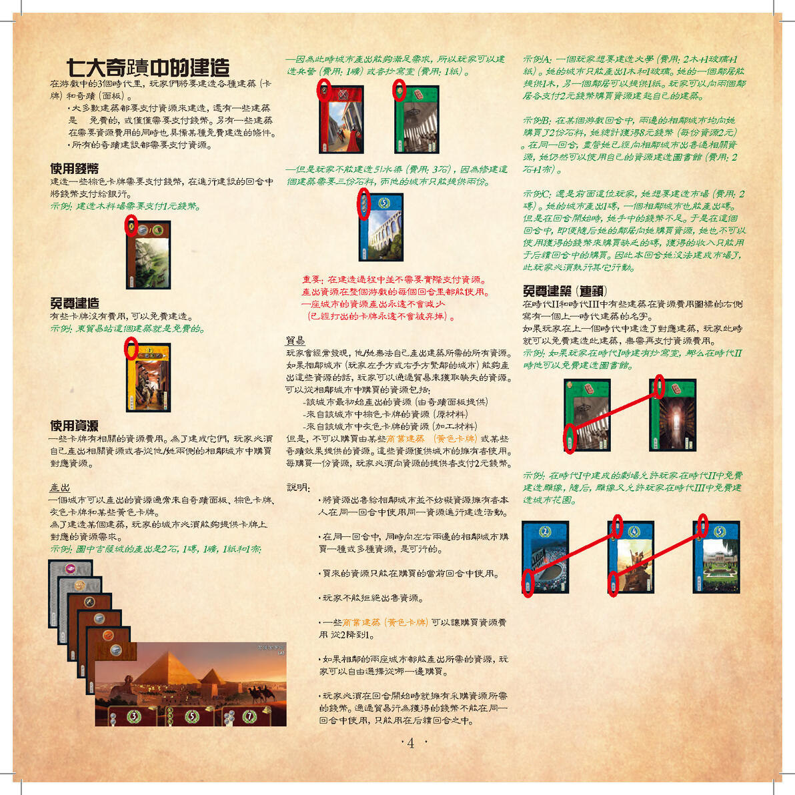
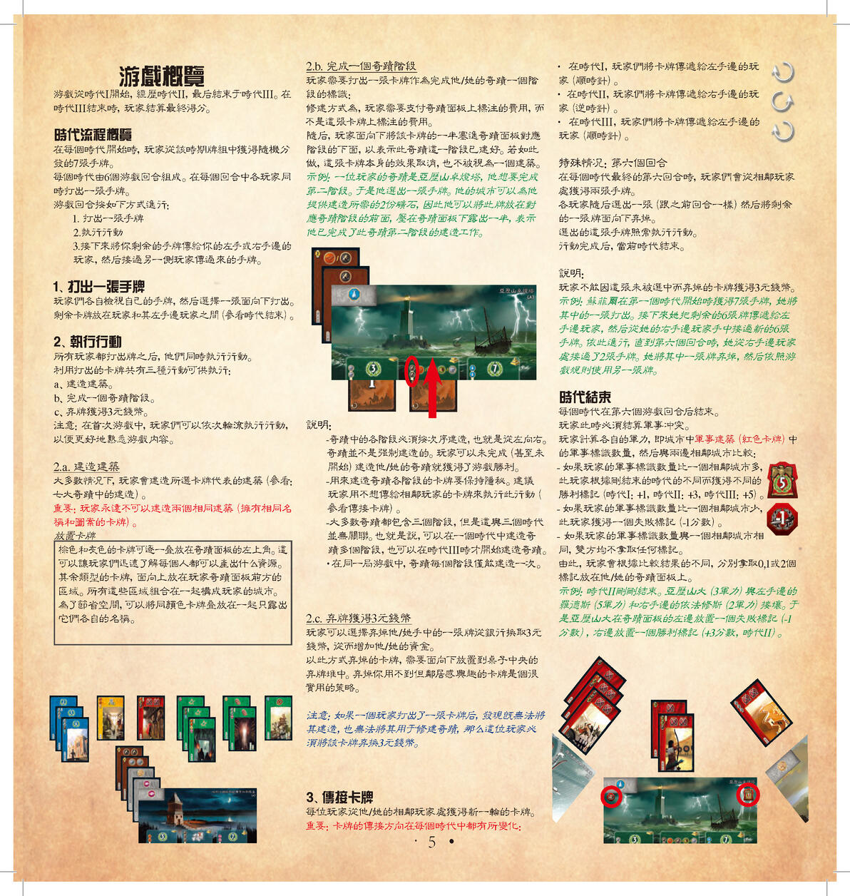
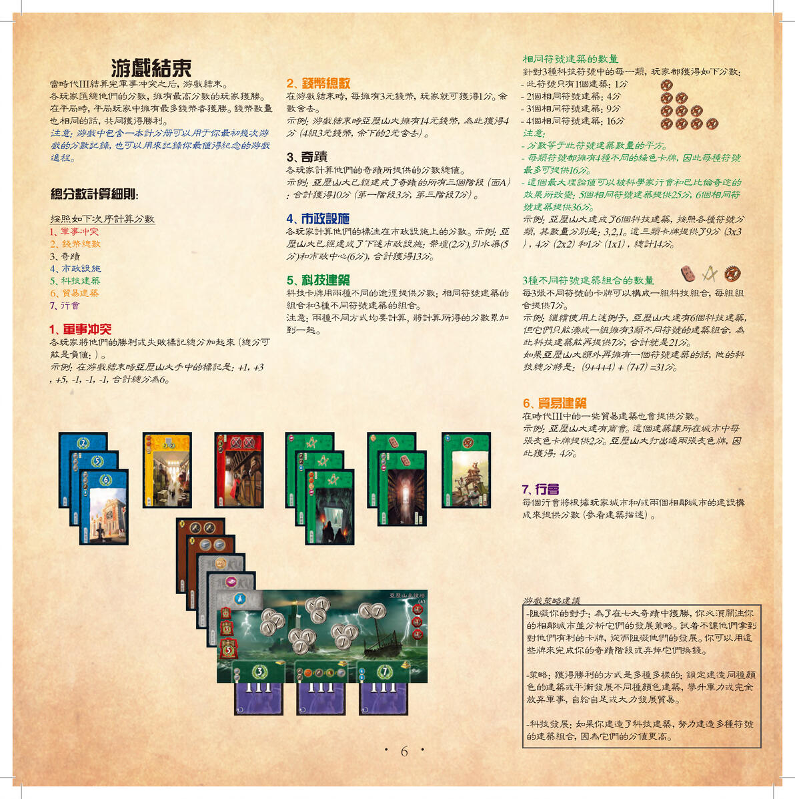
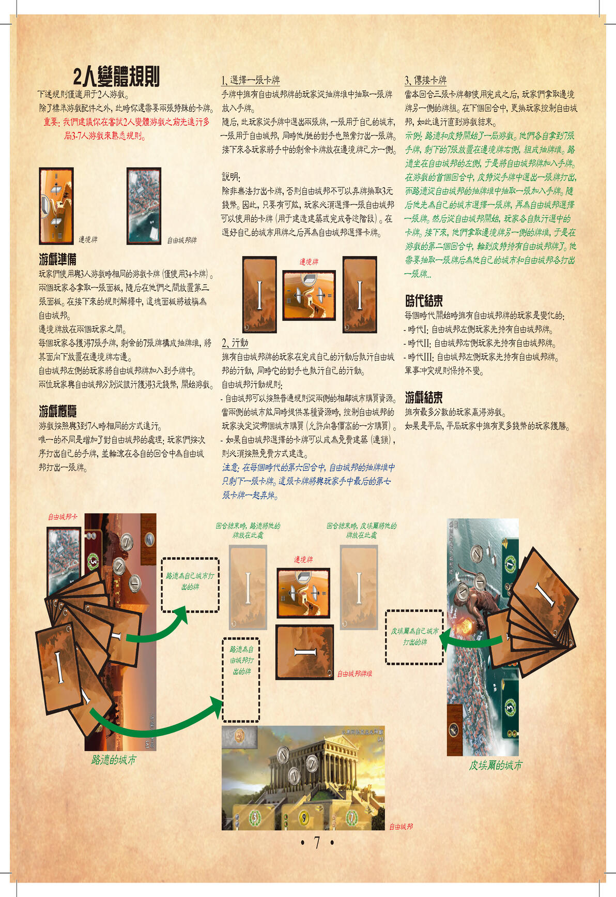
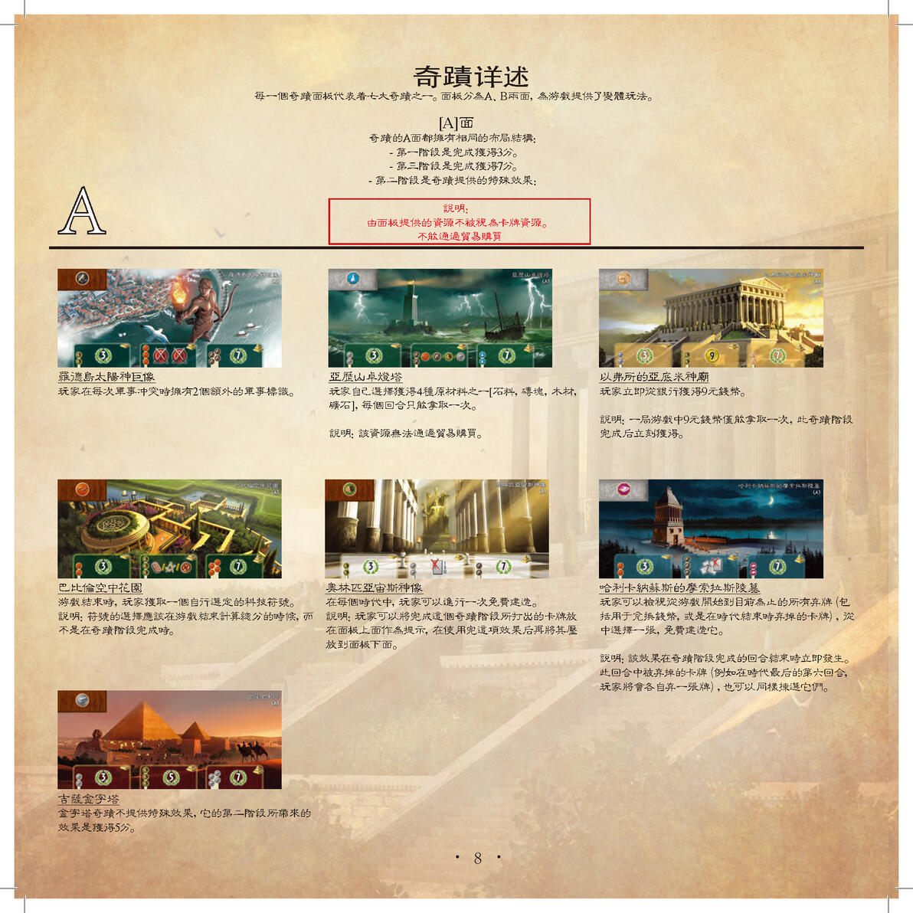
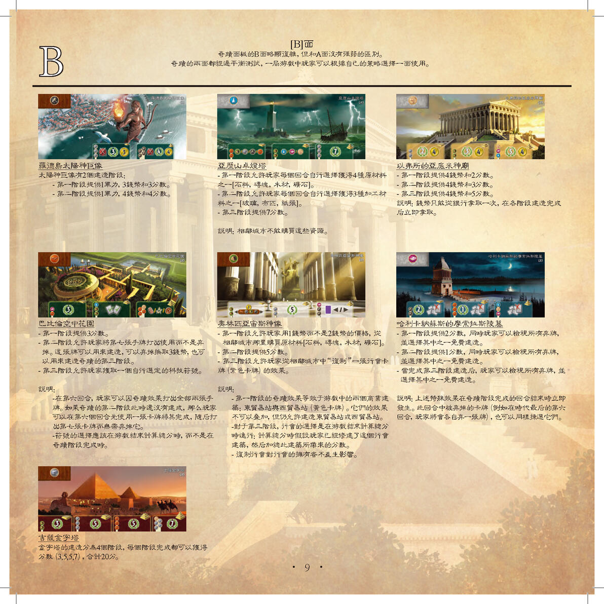
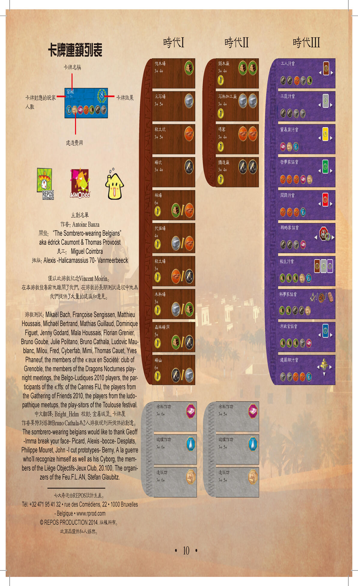
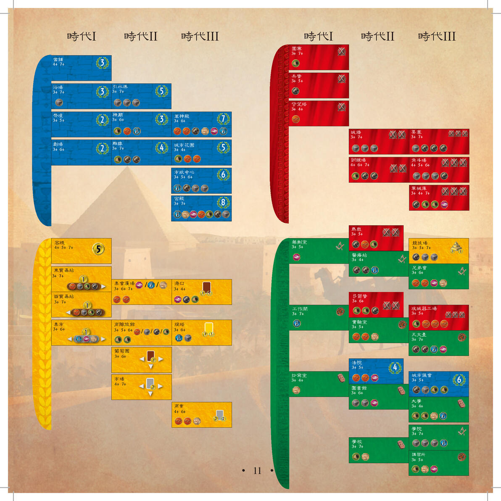
注：原文第 12 页图片在 B 站图床已失效（404），无法收录。上方文字为整理版速查，完整细节请对照扫描图。